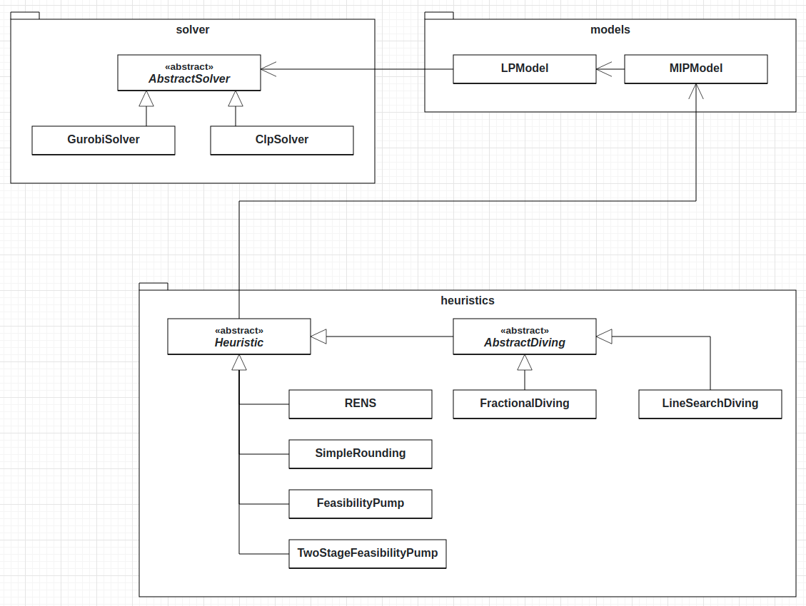

Developer API¶
On this page, we elaborate on the concepts of HIPS and how to extend the existing functionality. Below the core structure of HIPS is depicted in the UML diagram.
The solver package contains the linear programming solvers and can easily be extended.
The models package contains the hips.models.LPModel and
hips.models.MIPModel classes and interacts with the solver package. The hips.models.LPModel class has a connection to a solver.
Under the hood, whenever the linear program represented by hips.models.LPModel is changed, the changes are
directly redirected to the concrete solver. This means that the concrete solver (Gurobi or Clp) is constantly updated and
warm starts of the solvers are supported.
Lastly, the heuristics package contains the different heuristic implementations.
In the following sections we explain how to apply changes in the respective packages.
solver package¶
The solver package contains the different linear programming solvers supported by HIPS.
Currently, hips.solver.GurobiSolver and hips.solver.ClpSolver are supported.
These classes inherit from the abstract class hips.solver._abstract_solver.AbstractSolver and need to
implement various methods.
Adding a new solver¶
A new solver can be added by creating a class that inherits from hips.solver._abstract_solver.AbstractSolver
and implements the different abstract methods. Please have a look at the documentation of the class below for details.
Abstract class/interface for concrete solver, such as Gurobi or CLP. |
models package¶
The models package contains all necessary classes to express linear and mixed integer programs in HIPS. As mentioned
before, the hips.models.LPModel uses the solver interface to update the underlying linear program. Therefore, this
has to be kept in mind when applying changes to the models package.
heuristics package¶
The heuristics package contains the different heuristic implementations. Particularly, the two abstract classes hips.heuristics._heuristic.Heuristic
and hips.heuristics._abstract_diving.AbstractDiving are relevant when adding new heuristics.
Adding general MIP heuristics¶
A new heuristic can be added by inheriting from the hips.heuristics._heuristic.Heuristic class. The class has
various abstract methods that need to implemented in the child class. Of particular interest is the
hips.heuristics._heuristic.Heuristic.compute() method that needs to implement the computation of the heuristic.
Please have a look at the documentation of the class for details.
Adding diving heuristics¶
When implementing new diving heuristics, it might be more appropriate to inherit from the
hips.heuristics._abstract_diving.AbstractDiving class and implement the abstract methods there.
Particularly, only the hips.heuristics._abstract_diving.AbstractDiving.dive() and
hips.heuristics._abstract_diving.AbstractDiving.revert() methods need to be overriden.
The dive method should be overridden to follow the specific branching condition of the diving heuristic to be implemented.
This means adding either a new constraint or
setting the bound of a variable to restrict the feasible region
to the corresponding subproblem.
The revert method should be implemented to revert the MIP model to the state before any diving has happened. This method will be called at the end of a diving heuristic run, independent of the outcome. This behaviour is vital in case the heuristic is used during the computations of another heuristic.
Implements an abstract version of diving heuristics_tmp. |
|
Abstract heuristic class |
The documentation¶
It is good practice to document the code of a project and provide explanations on how to use it. The documentation of HIPS is generated with Sphinx. Please familiarize yourself with Sphinx before working on the documentation.
Setup¶
The documentation is located in the docs folder. To work with the documentation, you need to install the requirements listed
in docs/requirements.txt. Please have a look at Sphinx extensions
for more details.
Building the documentation¶
Navigate into the docs folder and run
make html
or
make clean html
to ensure that the documentation is completely rebuilt. The built documentation can then be found in docs/_build/html.
Editing the documentation¶
The documentation itself is written in reStructuredText markup language. This also means that the docstrings have to adhere to this format.
Note
Commits on the main branch trigger a GitHub action that automatically builds and deploys the documentation. Particularly, this means that there is no need to setup Sphinx locally, although it is generally recommended.